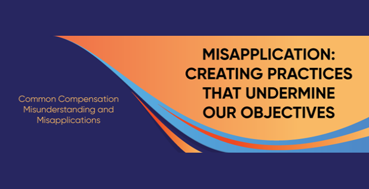
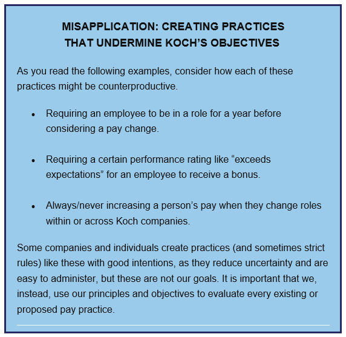
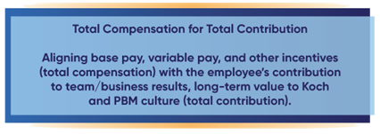
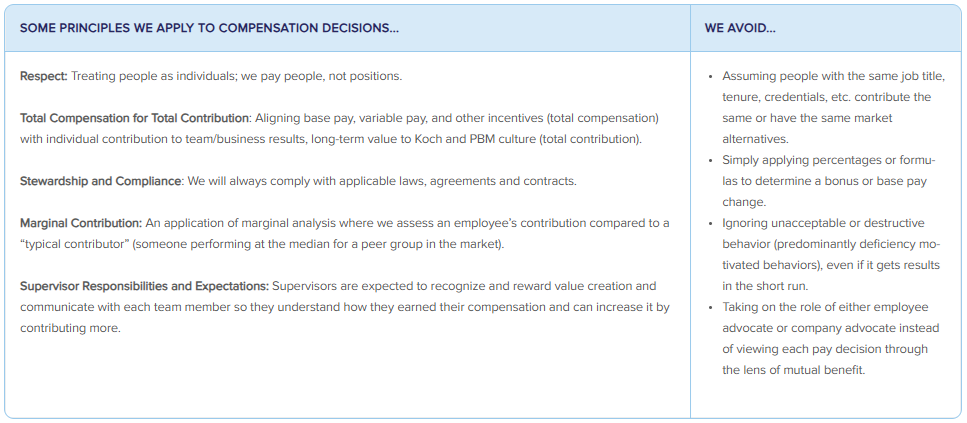
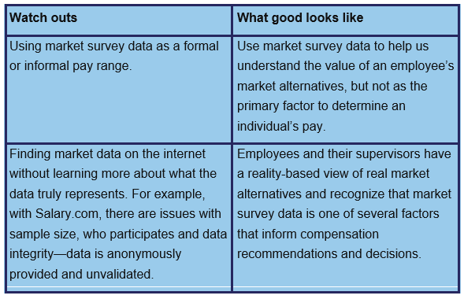
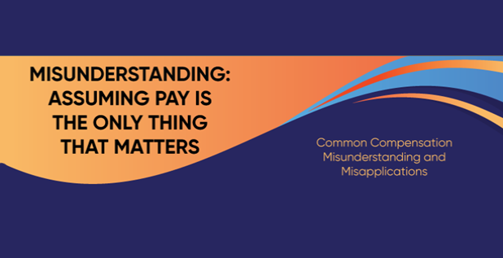
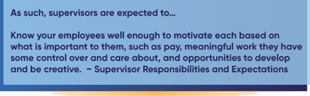
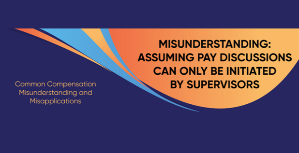
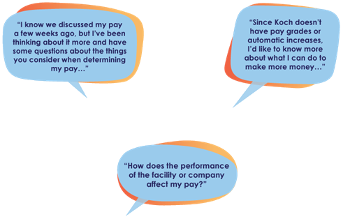

|  |
|---|
| We will focus on common misunderstandings and misapplications of our compensation approach and provide guidance on how to avoid or overcome them. Let's start with the objectives or our principle-based approach to compensation: Attract and retain contribution-motivated individuals and motivate them to be principled entrepreneurs. Recognize and reward individuals in a way that motivates them to maximize their contribution to the long-term success of organization consistent with Our Values. Comply with applicable laws, agreements and contracts.  TAKING A PRINCIPLE-BASED APPROACH There are many principles that inform our objectives and approach to compensation. One of the most prominent is this:  Take Action: Check out the Compensation web page to learn more. Have a conversation with your supervisor about "Total Compensation for Total Contribution" and what that looks like in practice. Resources: Compensation Our Compensation Objectives and Philosophy We strive to recognize and reward individuals in a way that motivates them to maximize their contribution to the long-term success of organization, consistent with Our Values. One of the best ways to do this is to reward employees for their contribution to the company's results and value created, similar to how an entrepreneur is rewarded in the marketplace. We believe this approach helps us attract and retain contribution-motivated individuals and motivates them to be principled entrepreneurs. A Principle-Based Approach It is important to understand the principles that inform our approach to compensation. Without this knowledge, misapplications often occur. Here are some common misapplications (We Avoid...) and principles we strive to apply instead.  Examples: Communicating Compensation Supervisors should communicate with each team member so they can understand how they earned their compensation and how they can increase it by contributing more. Here are some examples. Rewarding Contributions “When you started working on Project Everest, we were struggling to partner with vendors and the commercial team. You took a risk to slow down the project and focus on building those relationships—and it paid off. In the last six months, we moved fast and found new ways of doing things because of cross-team collaboration. That wouldn’t have happened without you, which is why you are receiving a bonus of…” “As you know, we usually do compensation reviews a few months from now, but you’re contributing in a way that deserves more pay and is sustainable, so I didn’t want to wait. Here are some specific reasons...” Looking to the Future “Last week, we talked about what you did to earn your base pay increase. Today, I want to discuss what you can do going forward to contribute more—and earn more—while working toward your career goals. In the past, you’ve talked to me about possibly becoming a supervisor, so let’s talk about some possible opportunities…” “I know you were disappointed, but also not surprised, that you didn’t receive a pay increase. During your feedback summary discussion, we talked about the most important development area for you is to collaborate effectively to achieve mutually beneficial outcomes. Let’s discuss your ideas for what you can do differently going forward and how I can help or coach you...” How Does Compensation Relate to the Other Aspects of Employee Development? In many ways, the compensation discussions you have with your supervisor are an extension of coaching and feedback summary discussions. Compensation discussions can also lead to a better understanding of what is motivating and meaningful to you, which can lead to revisiting your RREs and identifying opportunities for growth. Effective compensation decisions start with you and your supervisor working together in all aspects of employee development. |
| In addition to competing for customers in the marketplace, we also compete for talented employees. That is why it can be helpful to understand the pay practices of other organizatiosn - not to replicate those practices, but to understand current and potential employees' alternatives. A common pay practice in many organizations is establishing pay ranges for roles. Unless required by law or contract, we do not have strict pay ranges at organization. But if we are not careful, we can fall into the trap of using market survey data like it's a pay range.  It's important to note that we pay individuals, not positions. Our approach requires supervisors apply critical thinking and judgment to assess each individual team member's performance and contribution-which is the primary factor when determining pay. Resources: PBM Approach to Compensation |
|  |
| A job is a combination of many things-and each employee is motivated by their own set of factors and preferences. When considering financial and non-financial motivators, here are some things to keep in mind: Because each individual is just that - an INDIVIDUAL - each person values pay (and any job factor) differently. Individual circumstances change, which means what an individual finds important in a job often changes. Incentives must be mutually beneficial. Culture matters. Almost everyone cares about how they are treated at work. Work is often a big part of living a life of meaning, which is deeply personal, but always involves using one's gifts to make a positive difference for others.  Reflect and Discuss: Everyone - Consider what motivates you and what is important to you in a job. If you have not already done so, share these with your supervisor and discuss how things are going. Supervisors - Get to know each team member as a person, not just an employee. Learn what each team member values in a job and what is motivating. Consider what you can do to make a difference. Resources: Motivation Dimension The Motivation Dimension aligns everyone’s abilities, interests and incentives so they maximize their contribution to the organization’s long-term success. Principles in this dimension also help us: Recognize and reward value creation. Ensure supervisors know their employees and motivate each based on what is meaningful to them. Remove barriers so individuals can contribute more. The Motivation Dimension and You The Motivation Dimension helps you recognize that you succeed by maximizing your contribution to organization's long-term success. It includes: Contributing in ways that are rewarding to you personally. Proactively creating value in new ways. Having conversations with your supervisors about ways to earn more by contributing more. Identifying barriers that keep you from contributing more and seeking help to overcome or remove them. Try It Applying the five dimensions often requires reflection, asking questions, and discussion. Below are some prompts to get you started. For Everyone Recognizing that I succeed by maximizing my contribution to organization's long-term success. How can I make my work more energizing and meaningful to me? Have I asked my supervisor how to increase my compensation by improving my contribution? What external and internal barriers keep me from contributing more? Who can help me overcome or remove them? For Supervisors Motivate each employee to make the maximum contribution to the team and organization’s long-term success by realizing their potential. Know your employees well enough to motivate each based on what is important to them, such as pay, meaningful work they have some control over and care about, and opportunities to develop and be creative. Encourage employees through your actions as well as words so they proactively create value in new ways. Recognize and reward value creation, not activities. Communicate with each team member so they understand how they earned their compensation and can increase it by contributing more. |
|  |
| It's easy to forget that your supervisor already knows your wage or salary. So, if you have concerns or just want to better understand the reasons behind your pay, you should talk about it. Your supervisor can only address your questions or concers if you communicate them. You should know... Your supervisor is expected to communicate pay decisions and engage in productive discussions with you about pay and other things that are important to you. There isn't one set "time of year" to discuss pay. A discussion about pay is not a negotiation. If you convey concerns about pay to your supervisor, do not expect a decision on the spot. Your supervisor will need to seriously consider several factors to determine the appropriate course of action. Keep an open mind and expect the conversation to expand beyond pay - such as exploring different ways to increase your contribution. Starting the conversation... If you are unsure about how to start a conversation like this, here are some ideas:  And remember, the way to increase your total compensation is to increase your total contribution. DOn't hesitate to start the conversation. Resources: AskFred AskFred is equipped with knowledge of PBM. It answers questions, provides guidance and examples for how to apply PBM in your work, recommends (links to) additional PBM resources and encourages you to practice conversations using role play. Talk to AskFred as if you are talking to a PBM coach. This is different from using a web browser to search for things. It is interactive and conversational. Some Prompt Ideas To Get You Started Below are some examples of how you can start a conversation with AskFred. Apply PBM to Your Work I need to have a conversation with my supervisor/employee about RREs. Here is some context: ... I’m having difficulty on a project. Specifically, I’m seeing [details here]. Can you help me troubleshoot using the five dimensions? I need to make a decision and want help ensuring I’m applying PBM. Here is some background: ... Explore a Concept I’m new to Koch and keep hearing about comparative advantage - what is it? I just moved into a new role supervising 5 employees. Help me understand my supervisor role. I want to lead a team discussion on measures. Help me understand more about this topic to prepare for the discussion. Does “bottom-up” mean employees can do whatever they want? Role Play a Conversation When it makes sense, Fred will prompt you to practice a conversation using role play. However, you can ask to role play any time. Key prompts include: I’d like to role play a conversation I want to play the role of [employee, supervisor, project sponsor, etc.] The difficulty should be [easy, somewhat difficult, very difficult] End role play |